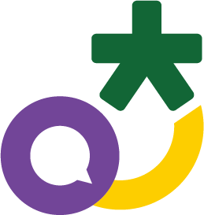

현장의 작은 개선이 숫자로 쌓였습니다
각 수치는 해당 사례·조사 조건의 값이며 전사 평균 절감률로 일반화하지 않습니다. 수치를 선택하면 근거를 확인할 수 있습니다.
공동 기반·부서 실험·TF 협업을 함께 운영했습니다
세 갈래는 활동 분류이며
고정 조직·직제가 아닙니다.
참여 기반
10개 부서 · 챌린저 15명
- 부서의 AI 활용 촉진
- 작은 시도와 사례 축적
- 동료 실습·사용 지원
- 전략경영실 운영 지원
역할 변화개발 일괄 → 부서 확산 + TF
01공동 기반
- HWPX 문서 체계 전환
- 전 직원 AI 활용성 조사
- AI 활용 윤리 지침안
02부서별 실험·적용
- 반복 입력·서식 자동화
- 시설·이용자 서비스
- 홍보콘텐츠·웹 아카이브
- 공동실습·문화 확산
03과제별 TF 협업
- 구글 AI 활용 콘텐츠
- 수입행정 간소화
- 월간 업무보고 자동화
4월 위촉부터 10월 성과보고회까지 이렇게 걸어왔습니다
5월부터 9월까지, 매달 기반과 도구가 더해졌습니다
회의록·HWPX 전환 기록·각 결과보고·부서 제출 사례 기준입니다. 산울림 워크숍 인원은 대상 기준이며, KPI 시스템은 위험 요소 보완 후 조건부로 운영을 시작했습니다.
10개 부서 15명이 함께했습니다
이름을 선택하면 확인된 개인 기여와
부서 활동을 볼 수 있습니다.
위촉 명단 기준 · 참석 여부와 관계없이 전원 소개
전략경영실은 기관 공통 시스템과 기반 도구를 맡았습니다
9월 경과보고·부서 제출물 기준
상태는 보고 시점 기준입니다.
KPI 성과관리 시스템
정식 운영엑셀 중심 취합을 웹 입력·확인·집계 흐름으로 전환
7.13. 조건부 운영 개시 → 9월 경과보고 기준 정식 운영
실적 입력부터 집계까지 한 흐름으로 모아, 부서와 담당자가 같은 자료를 봅니다.
재무부터 홍보까지, 현장 업무에 맞춘 도구를 만들었습니다
03B 업무유형별 사례목록 기준입니다. 단계는 각 부서의 제출·보고 상태이며 항목 수는 완료 건수가 아닙니다. 항목을 선택하면 근거와 해석 범위를 볼 수 있습니다.
내 업무에서 찾아보는 성과
업무 유형과 부서를 함께 선택해
적용할 수 있는 사례를 찾아보세요.
사례목록의 30개 탐색 항목입니다. 활동·공통 기반·기획·도구모음을 포함하며, 확정 완료 프로젝트 수를 뜻하지 않습니다.
검색어나 부서·업무 유형을 바꿔보세요.
바뀐 업무를 직접 확인
짧은 시연을 보고,
예제 자료로 업무 흐름을 체험합니다.
영상 재생을 지원하지 않는 환경입니다. 영상 내려받기 또는 아래 체험을 이용하세요.
입력·집계·분석을 한 흐름으로
로컬 HTML 프로그램에서 같은 데이터를 수입 관리와 실적 분석에 활용하는 모습을 보여줍니다.
예제 자료로 체험하기
설명용 재구성 · 운영 시스템과 연결되지 않음- 01수입·지출 대시보드와 수입결의서 생성기 개발
- 02현장자료 표준화, 사용자 검증·보완과 활용 안내
- 03안전교육일지 개선과 동료 활용지원직원 교육은 태진호 챌린저와 공동 진행
소사청소년센터의 안전교육일지와 동료 교육은 공동 제출·공동 기여의 범위를 구분합니다.
구성과 추진체계를 한눈에
자료 기반 현황과 설계 제안을 구별해
같은 도식을 비교합니다.

근거를 확인하고, 자료를 이어 쓰기
개발·배포·실사용·확산을 구분하고
수치의 분모와 측정 조건을 함께 봅니다.
설문은 6월 10~30일의 자기보고 조사입니다. 응답자 중 AI 활용률 92.9%(105/113명)를 전 직원 활용률이나 사업의 인과적 효과로 해석하지 않습니다. 시간 비교는 제출 사례의 작업 조건에 한정하며, 목표·예상값과 실측을 구분합니다.
원문 출처와 확인 기준

현장을 바꾼 15명의 AX 챌린저, 고맙습니다
2027년, 여러분의 반복업무가 다음 혁신이 됩니다 · 2기 AX 챌린저로 함께해 주세요